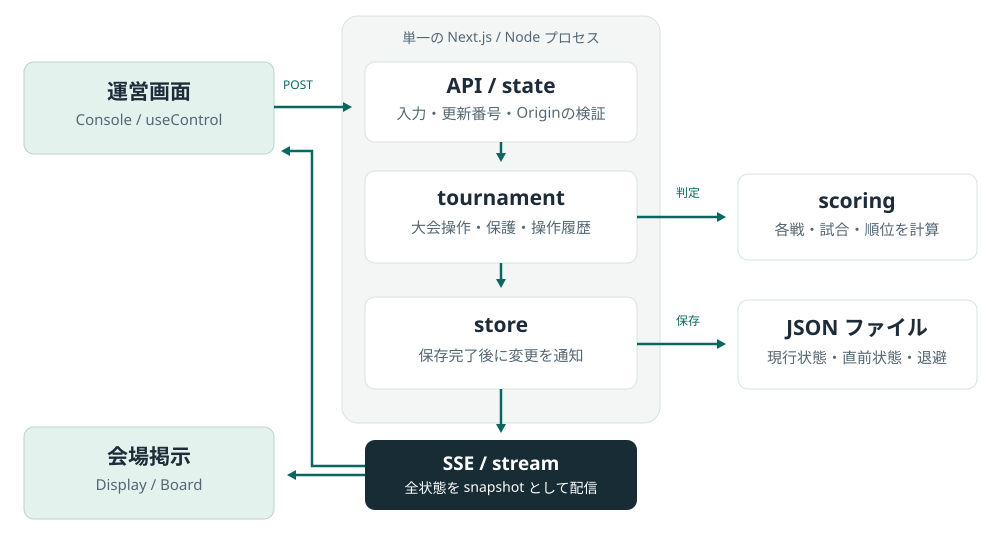

PART 02 / DEVELOPMENT
開発の手順書
初回起動から、変更・検証・会場運用・復旧まで。現在の実装をたどりながら、安全に開発を進めるための手順です。
まず手元で起動する
この手順は、リポジトリを初めて触る開発者向けです。現在のアプリはNext.jsの1プロセスで動き、保存先はJSONファイルです。PostgreSQL・Prismaの初期化や、CHaser試合サーバーとの接続は起動に必要ありません。
| 必要なもの | このリポジトリの指定 | 確認方法 |
|---|---|---|
| Node.js | 22以上。PRの自動検査は22系。 | node --version |
| pnpm | 9.12.0（packageManagerで固定） |
pnpm --version |
| Git | リポジトリを取得できること | git --version |
| ブラウザー | 運営用と掲示用の2タブを開く | 開発用URLに接続 |
コマンドはmacOS／Linuxのシェルを基準に記載しています。WindowsではWSL等の同等の環境を使ってください。Node.jsを先に用意し、pnpmがなければ
npm install --global pnpm@9.12.0 で指定版を入れます。
-
リポジトリを取得し、developから作業ブランチを作る
すでに手元にある場合はcloneを省略します。ローカルの未コミット変更は、内容を確認してコミットまたは退避してから切り替えます。
git clone https://github.com/UDHI-LAB/CHaserProgressionControlSystem.git cd CHaserProgressionControlSystem git fetch origin git switch develop git pull --ff-only origin develop git switch -c codex/your-change -
依存をリポジトリのルートにまとめて入れる
pnpm install --frozen-lockfilechros/や各packageへ移動して個別にインストールする必要はありません。通常の起動では環境変数ファイルの作成も不要です。 -
開発サーバーを起動する
pnpm devターミナルに表示されたURLを開きます。通常は
http://localhost:3000です。ポートが使用中の場合は、実際に表示された番号を使います。 -
2つの画面を開いて、記録と掲示を確かめる
/consoleと/displayを開きます。新しい保存先ならサンプル大会が作られます。運営画面で「サーバー接続中」を確認し、2戦を記録する手順を試します。
通常は
chros/.chros
に保存されます。分離したい場合は、ルートで次を実行します。絶対パスを使うと、起動する場所が変わっても同じ保存先を指せます。
CHROS_DATA_DIR="$PWD/chros/.chros/development" pnpm dev入力から掲示までの流れを読む
運営画面が送るのは、現在の更新番号と「何をするか」という操作です。サーバーが検証・計算・保存した後、同じ全状態を運営画面と会場掲示に配信します。画面側で別の採点処理を持たせない構成です。

scoringは入出力を持たない計算、storeは保存と通知を担当します。
| 変更内容 | 読む入口 |
|---|---|
| 状態・操作・入力の型と検証 | packages/shared/src/control.ts |
| 1戦・2戦の採点 | packages/scoring/src/match.ts |
| 予選順位・同順位 | packages/scoring/src/standings.ts |
| 大会操作の振り分け・履歴 | chros/lib/tournament.ts |
| 参加者・予選・本戦・結果の記録 | chros/lib/tournament/ 配下の各操作 |
| 保存・CSV・SSE |
chros/lib/store.ts、chros/lib/export-results.ts、chros/app/api/stream/route.ts
|
| ブラウザーの通信状態・送信 | chros/lib/use-control.ts |
| 運営画面 |
chros/components/ConsoleApp.tsx →
console/、management/、matches/
|
| 掲示画面とプレビュー |
chros/components/Board.tsx → board/、ページ数は
chros/lib/board-pages.ts
|
| 表示順の編集と実行 |
chros/components/Rundown.tsx、rundown/CueEditor.tsx
|
採点を変更する前に押さえる4点
-
Match.a/bは固定の参加者枠です。先攻側という意味ではありません。初戦の先攻はfirstCoolに保存します。 -
scoreA/scoreBは元の得点です。特殊P・ゲーム勝数・換算得点は計算で導出します。 - 試合の勝者は2戦がそろってから確定します。同値で再試合待ちなら、予選順位へ加算しません。
-
再試合前の記録は
previousAttempts、訂正前の値と理由は操作履歴に残します。
変更を小さく作り、読みやすく保つ
最初に「誰が、何をしたとき、何が変わるか」を一文で決めます。その変更を担う場所から読み、画面の都合と大会の規則を混ぜないようにします。
| 例 | 変更する場所 | 一緒に確認すること |
|---|---|---|
| 文言・レイアウトを変える | 対象のコンポーネント、必要ならCSS | 運営・掲示の両方、長い名前、狭い画面 |
| 採点・順位の基準を変える | scoring、規則版・説明資料 | 得点比較、特殊勝利、同点、A/B反転、順位への算入 |
| 大会の操作を増やす | sharedのコマンド → tournament → 画面 | 入力検証、進行上の保護、履歴、掲示への反映 |
| 保存項目を増やす | sharedの状態 → 初期値 → 保存・出力 | 既存JSONの読込互換性、再起動、バックアップからの復旧 |
レビューで確認する書き方
-
match、player、recordedGameのように役割が伝わる名前を使う。 - 関連する処理をまとめ、採点・保存・HTTP応答・描画の責任を分ける。単純な一行まで分割しない。
- 入力不備などの例外は先に扱い、深い条件分岐を減らす。
-
複数段階の操作には
saveResultのように名前を付ける。単純な入力更新は入力欄の近くに置く。 - コメントは理由や制約の説明に絞る。関数名から分かる処理の言い換えは増やさない。
命名と処理のまとまりはZennの可読性の記事、条件分岐はZennの早期リターンの記事を参考にした方針です。
コミットとPRは、変更目的で分ける
整形だけの変更、判定の変更、画面の変更、資料の変更を区別するとレビューしやすくなります。細かいファイル単位ではなく、ひとつの理由で説明できるまとまりにします。PRには変更後の動き・確認したこと・残る制約を書き、取り込み先は
develop にします。
現在の保存状態には
schemaVersion
がありますが、版を上げるだけで古いJSONが移行される仕組みではありません。保存済みデータを残した読込方法や移行手順を用意し、サンプルを自動生成して上書きする回避策は取らないでください。
変更を検証する
まず、ルートで通常の検査を実行
pnpm format
pnpm format:check
pnpm typecheck
pnpm test
pnpm build| 確認 | 目的と期待する結果 |
|---|---|
| format / format:check | Prettierで書式を統一・検査。HTML手順書のCSS・JSも対象です。命名の良し悪しは別途レビューします。 |
| typecheck | shared・scoring・アプリの型、未使用の変数・引数を検査。エラーなしで終了すること。 |
| test | 採点と大会進行のユニットテスト。作成時点では29件。変更に応じた境界条件を追加します。 |
| build |
Next.jsの本番ビルド。実行中の開発サーバーを止めてから行います。同じ
.next を使うためです。
|
GitHub ActionsはPRで整形・型・テストを実行します。本番ビルドと、次のAPI・画面の確認は別途行ってください。
APIの一連の流れを確認する
専用の空の保存先と別ポートを使います。このテストは大会を切り替え、参加者を登録し、予選から決勝まで結果を書き込みます。
--reset-test-data
はテスト開始の明示です。データを保護するスイッチではありません。必ず下記のように専用の保存先を作ります。
ターミナルA：ルートからビルドし、毎回新しいテスト用フォルダーで起動。
pnpm build
CHROS_TEST_DATA="$(mktemp -d)"
CHROS_DATA_DIR="$CHROS_TEST_DATA" pnpm --filter chros exec next start --hostname 127.0.0.1 --port 3114ターミナルB：ルートで実行。
node scripts/smoke-prototype.mjs http://127.0.0.1:3114 --reset-test-data
"result": "PASS"
を確認します。参加者登録・総当たり・2戦記録・本戦・決勝のほか、SSE、更新競合409、別Originの書き込み拒否403、CSV・JSONも確認します。終了後はターミナルAで
Ctrl＋C を押します。
最後はブラウザーで、運営の操作として確認
会場向けに起動する
サーバー役のPCを1台決め、運営・掲示の端末を同じ会場LANにつなぎます。現在は単一プロセスでの運用が対象です。同じ保存先に対し、複数のアプリを同時に起動しないでください。
-
依存と本番ビルドを用意する
pnpm install --frozen-lockfile pnpm build -
大会専用の保存先を指定し、LANへ公開して起動する
次の
/absolute/path/to/event-dataを、書き込める実際の絶対パスに置き換えます。CHROS_DATA_DIR=/absolute/path/to/event-data pnpm --filter chros exec next start --hostname 0.0.0.0 --port 3000 -
端末ごとにURLを開く
サーバー自身では
http://localhost:3000/console。他の端末ではhttp://サーバーPCのLANアドレス:3000/displayなどを開きます。他の端末のlocalhostは、その端末自身を指すため使いません。 -
接続・保存・投影をリハーサルする
端末間で更新されること、ファイアウォールの許可、投影の文字サイズ、PCのスリープ設定を確認します。停止は起動したターミナルで Ctrl＋C。保存後の状態は同じ保存先で再起動すると読み込まれます。
会場LAN内の試作で、ログイン・権限管理はありません。インターネットへ一般公開する前提の設定ではありません。試合サーバーとの自動連携や複数コートの割当は含みません。
Docker構成を使う場合
リポジトリには docker-compose.yaml があります。アプリの保存先は
/data/chros、volume名は chros-data です。DBは
database
プロファイルに分けられ、現在の起動に不要です。Dockerでのビルド・起動はこの資料では未検証のため、会場採用前に永続化まで確認してください。down -v
は保存用volumeも削除するので、記録の保管前に実行しないでください。
保存先を理解し、必要なときに復旧する
| ファイル | 内容・使いどころ |
|---|---|
state.json |
現在の大会全体。起動後の読み込み元。 |
state.previous.json |
通常の操作で更新する、直前の変更前状態。長期履歴のバックアップではありません。 |
archive-時刻-revision.json |
「空の大会」「サンプル」へ切り替えたときに退避した大会。 |
| ダウンロードした全記録JSON | 運営が書き出した時点の大会。外部保管・復旧に使えます。 |
復旧の手順
-
運営と相談し、全員の操作を止めてサーバーを停止する
どの時点へ戻すかを決めます。戻した時点より後の記録は、復旧後の状態に含まれません。再入力が必要な記録を確保してください。
-
現在の保存先を丸ごと別の場所へコピーする
壊れている可能性があっても、現行ファイルは消さずに保管します。サーバーを動かしたままファイルを差し替えないでください。
-
復旧候補を、隔離した保存先で先に確かめる
候補の全記録JSONまたは退避JSONを、別のフォルダーへ
state.jsonという名前でコピーします。そのフォルダーをCHROS_DATA_DIRに指定し、別ポートで起動します。大会名・参加者・最新の結果・履歴が意図した時点か確認します。 -
確認できた候補で本番の現行状態を置き換え、再起動する
隔離したサーバーを停止します。本番も停止したままであることを確かめ、候補JSONを本番保存先の
state.jsonにコピーします。同じ保存先を指定して再起動し、運営と掲示を再読み込みして内容を照合します。
復旧には全記録JSONを使います。壊れたJSONを削除して起動すると、新しいサンプル大会が作られる可能性があります。ファイルの削除を復旧手段にせず、元データを保全して原因を確認してください。
不具合を切り分ける
| 症状 | 最初に確認する場所 | 次に見るもの |
|---|---|---|
| 画面が開かない | 起動ターミナルのURL・エラー | ポート、LAN接続、待受アドレス、ファイアウォール |
| 接続が続かない | 開発者ツールのNetworkで /api/stream |
snapshot
の受信、プロキシのタイムアウト／バッファリング。SSEが接続中のままになるのは正常。
|
| 保存が拒否される | POST /api/state の応答本文 |
下表の状態コード、入力値、大会の進行状態 |
| サンプルに戻ったように見える | 指定した CHROS_DATA_DIR と起動場所 |
別の保存先・別ポートを見ていないか。未指定時は作業ディレクトリが基準。 |
| 起動後に保存状態を読めない | サーバーログと state.json |
JSONの破損・状態スキーマとの不一致。先に保存先を保全する。 |
| 得点・勝者がおかしい | 元の得点・勝因・特殊勝者・計算方式 |
evaluateGame → evaluateMatch →
standings の順に確認
|
| 状態コード | 意味 | 対処 |
|---|---|---|
| 400 | 形式・入力・操作条件の不備 | 応答の error と入力内容を読む。 |
| 403 | 別のOriginからの書き込み | 画面とAPIのホスト・ポートを合わせる。検証を無効化して回避しない。 |
| 409 | 他の操作により更新番号が進んでいる | 返された最新状態を確認し、必要な操作だけ再送。無条件に自動再送しない。 |
| 413 | 要求のサイズが上限を超えた | ロゴ等のサイズと送信内容を確認する。 |
不具合報告に残すもの
再現手順、期待した結果、実際の結果、対象コミット、計算方式、試合番号、端末側のエラー、サーバーログをまとめます。再現用データは架空の参加者で用意し、実大会の全記録JSONを公開PRへ添付しないようにします。
この手順書を更新する
HTML・CSS・JavaScript・SVG図は
chros/public/manual/
にまとまっています。スクリーンショットはBase64のデータURLとしてHTMLに埋め込み、PNG・JPEG等のバイナリはGitに追加しません。外部のフォントやライブラリーの読み込みはありません。フォルダーごとコピーすれば、サーバーなしでも
index.html を開いて読めます。
| ファイル | 役割 |
|---|---|
index.html |
2部の入口・読み方 |
operations.html |
大会運営の手順 |
development.html |
開発・検証・起動・復旧の手順 |
assets/manual.css |
共通の見た目・スマートフォン表示・印刷 |
assets/manual.js |
印刷ボタン・目次の現在位置・画像の拡大と原寸表示 |
data-screenshot |
HTML内にBase64で埋め込んだ実画面。画像の識別名で差し替えます。 |
assets/*.svg |
大会の流れ・先後交代・データの流れの図 |
-
画面のボタン名と資料の表記を合わせる
見出し・入力欄・完了の目印も見直します。規則の説明を変えたときは、設計資料と運営手順の両方を更新します。
-
架空データの環境で画像を撮り直し、HTMLへ埋め込む
本番の保存先を使わず、運営・掲示を実際に操作します。基本の撮影幅は1440px。説明するパネルをPNG・JPEG・WebPで撮影し、リポジトリの外へ一時保存します。次は、識別名
score-entryの画像だけを差し替える例です。node scripts/embed-manual-image.mjs chros/public/manual/operations.html score-entry /tmp/new-score-entry.png画像はBase64に変換され、HTMLの
srcに入ります。元の画像はGitへ追加しません。識別名はHTMLのdata-screenshot、説明はaltと図のキャプションで管理します。 -
通常表示・狭い画面・印刷を確認する
/manual/index.htmlを開き、2部のリンク、目次、画像の拡大、表の横スクロールを確認します。印刷プレビューで画像・表・見出しが切れていないか見ます。外部通信を止めた状態や、HTMLを直接開く方法でも確認します。
関連資料の使い分け
| パス | 読む目的 |
|---|---|
docs/prototype-proposal.md |
試作の判断D01〜D13、確認してほしい項目、検証範囲 |
docs/tournament-rules.md |
公開ルールと依頼者の運用説明の出典・違い |
docs/technical-requirements.md |
現在の状態・API・保存・計算の仕様 |
docs/development.md |
命名・責務・コメント等の開発基準 |
docs/technical-roadmap.md |
将来構想。現在実装済みの機能一覧としては使わない。 |